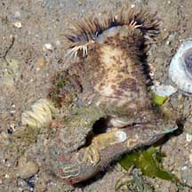
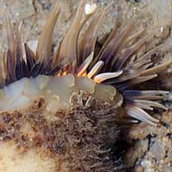
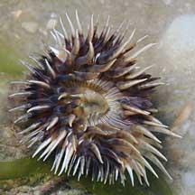
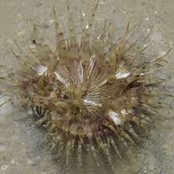
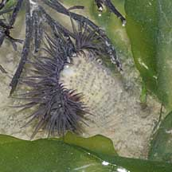
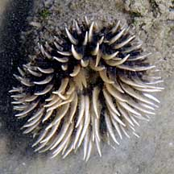
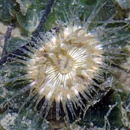
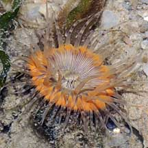
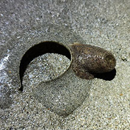

|
|
| sea anemones text index | photo index |
| Phylum Cnidaria > Class Anthozoa > Subclass Zoantharia/Hexacorallia > Order Actiniaria |
| Big
hermit-hitching anemone Calliactis sp. Family Hormathidae updated Jul 2024 Where seen? This rather large anemone is sometimes seen on shells occupied by hermit crabs on our Northern shores. The anemone is sometimes many times larger than the hermit crab! It is also seen attached to rocks and other small rubble, rubbish with a hard surface, as well as living snails. Features: Diameter with tentacles extended 2-3cm. Many short tapering tentacles. Some with opaque tentacles with dark base and paler tips, others with semi-transparent or beige tentacles with faint bands. Oral disk with radiating fine white stripes. Body column is thick, long with tiny bumps (verrucae) in regular bands. The body column usually covered with sediment. Small anemones are also seen on shells occupied by hermit crabs as well as on living snails. Status and threats: There is inadequate information as at 2024 to make an informed assesment of its conservation status in Singapore. |
 Changi, Jul 08 |
 |
 |
 Changi, Jul 04 |
 It was attached to a living snail. Changi, Jul 09 |
 Verrucae in regular bands. Changi, Apr 10 |
|
 Chek Jawa, Sep 10 |
 Changi, May 10 |
 Changi, Jul 09 |
Species are difficult to positively identify without close examination.
On this website, they are grouped by external features for convenience of display
| Big hermit-hitching anemones on Singapore shores |
On wildsingapore
flickr
|
| Other sightings on Singapore shores |
 Stuck on a sand collar. Changi East (Lost Coast), Jul 24 Photo shared by Che Cheng Neo on facebook. |
References
|